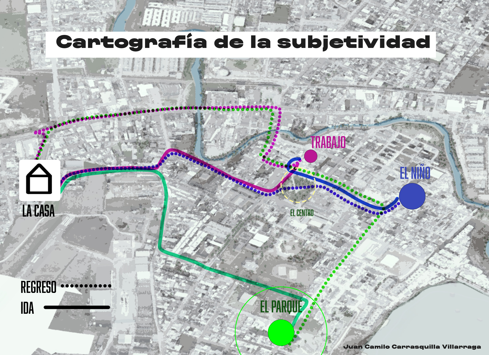
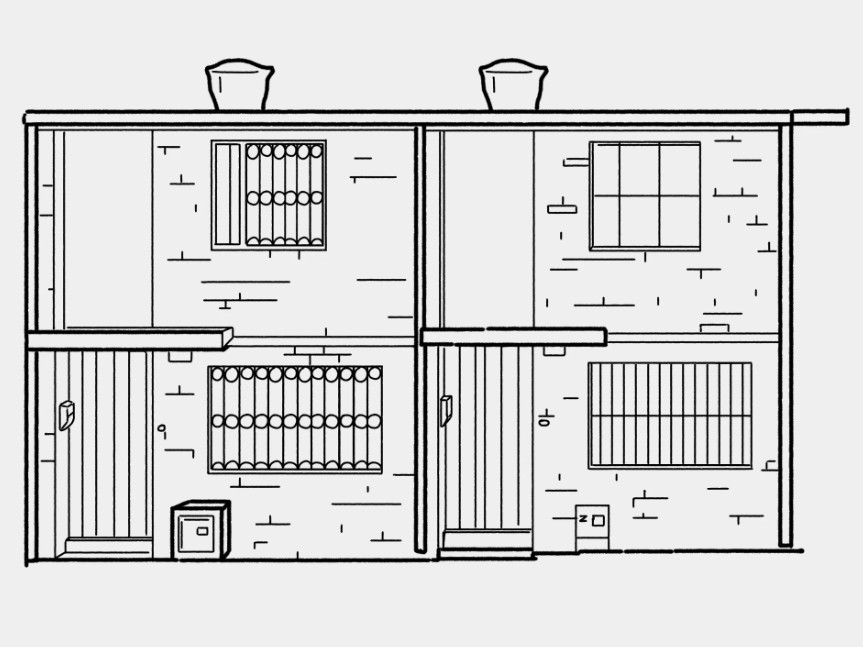

Representación perceptual del espacio cotidiano, contrastes de ritmo y producción de topofilias / topofobias.

Nodo central de reposo, seguridad y preparación. Punto cero desde el cual se estructuran todas las vivencias del día a día.
— Trazo Grueso: Rutas de ida (mayor velocidad).
- - Trazo Delgado: Retorno individual por vías secundarias.
= = Trazo Doble: Retorno acompañado (2 personas).
📍 Nodo Amarillo: Hito central / Parque Alfonso López.
((( ))) Anillos: Zona de descompresión sensorial.
Haz clic o pasa el cursor sobre las líneas para activar el paisaje sonoro.
